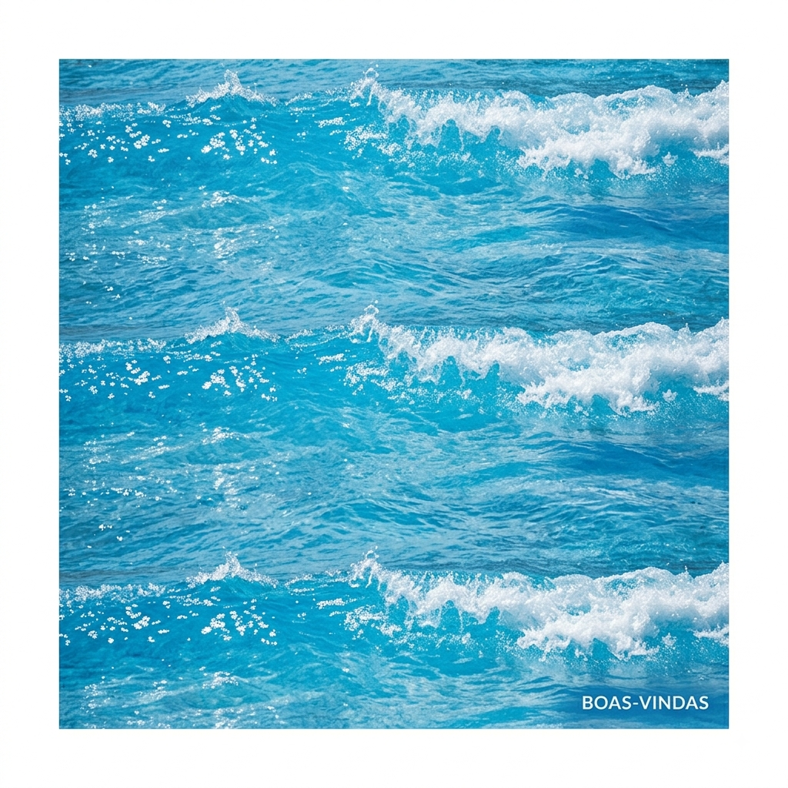
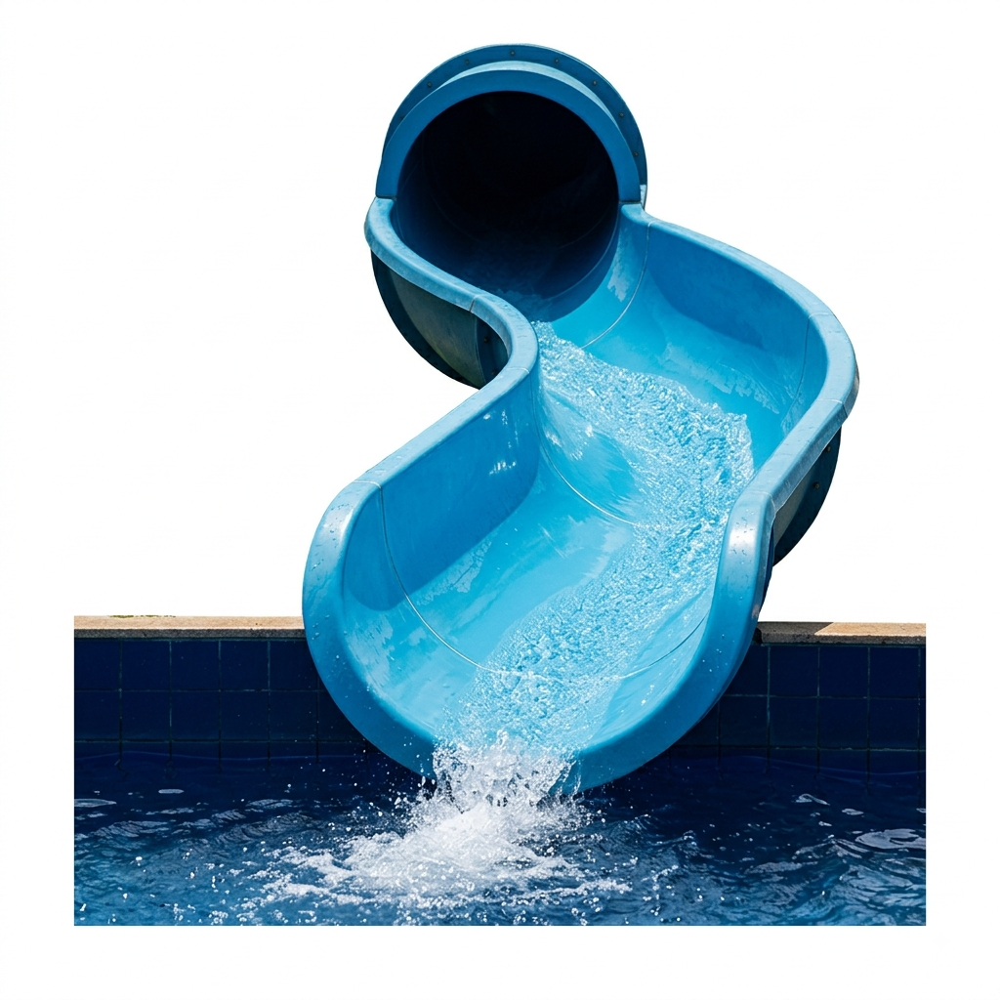
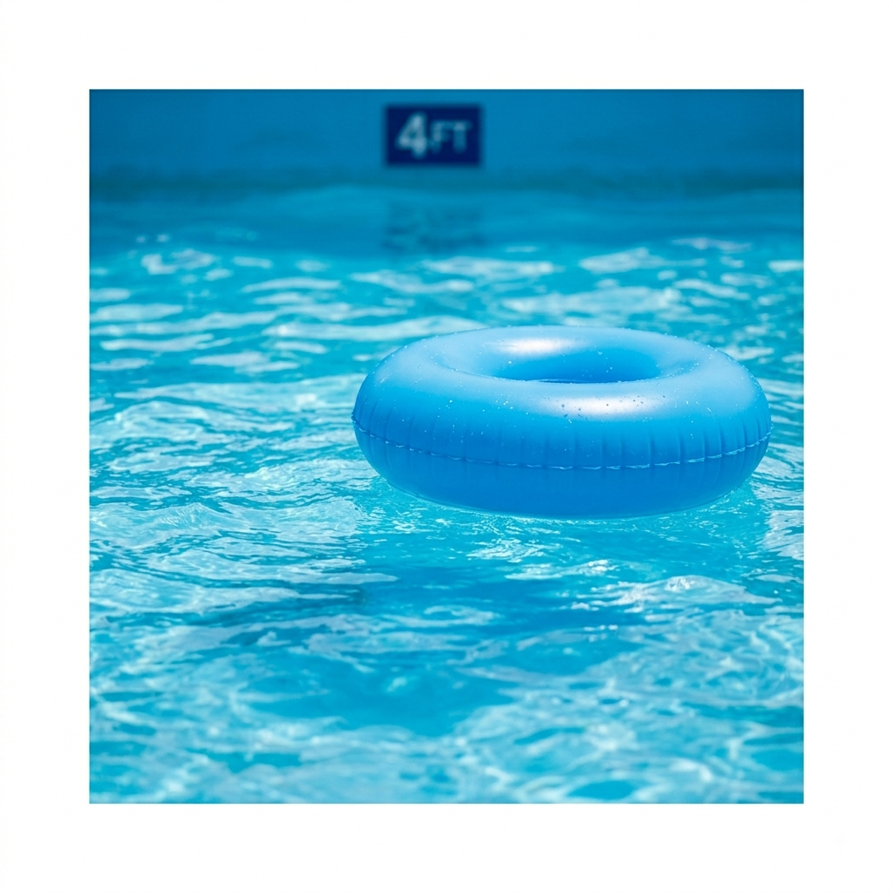
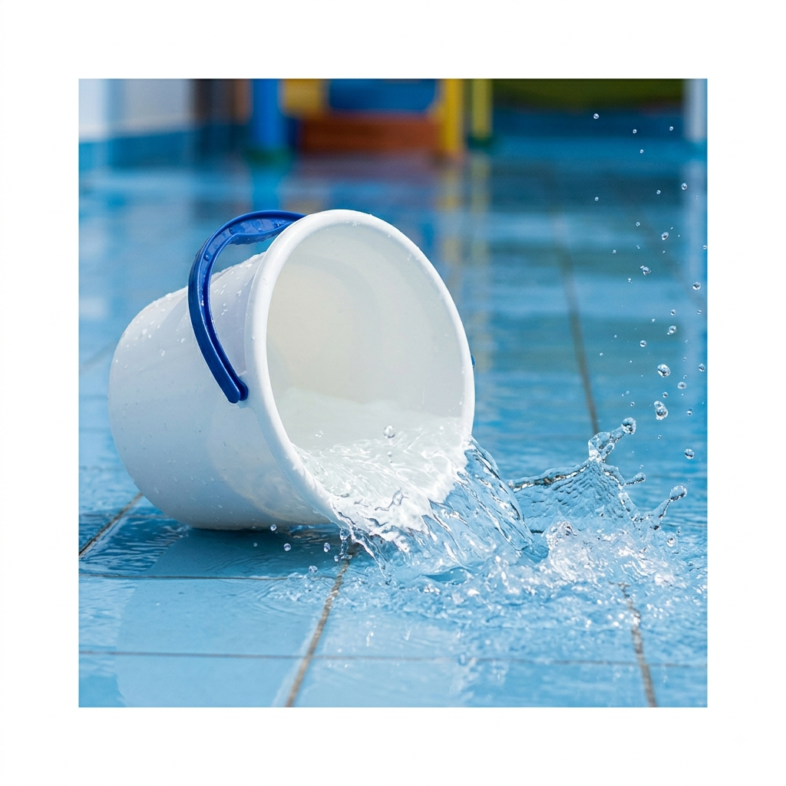

Bem-vindos ao nosso oásis!
Por: Ana Vitória
Hoje abrimos as portas do nosso blog para compartilhar as melhores dicas de verão e segurança nas piscinas.
Mergulhe na diversão com Ana Vitória!

Por: Ana Vitória
Hoje abrimos as portas do nosso blog para compartilhar as melhores dicas de verão e segurança nas piscinas.

Por: Ana Vitória
Você sabia que o nosso maior tobogã tem a altura de um prédio de 10 andares? A adrenalina é garantida para os corajosos!
Fonte: Engenharia de Parques

Por: Ana Vitória
A piscina de ondas é a favorita de todos. Lembre-se sempre de respeitar o limite de profundidade indicado pelos guarda-vidas.

Por: Ana Vitória
Nossa área infantil conta com piso antiderrapante e profundidade máxima de 40cm, ideal para os pequenos exploradores.

Por: Ana Vitória
Para repor as energias, temos quiosques de frutas e sorvetes artesanais espalhados por todo o complexo.

Por: Ana Vitória
A diversão dentro da água é ótima, mas proteger a pele é essencial. Reaplique o protetor a cada 2 horas.
Fonte: Guia de Saúde